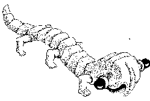

On a coutume de maudire les auteurs
de virus en les accusant d'être des génies malfaisants n'ayant
en tête que vandalisme et destruction. Je ne prétendrai pas
que c'est entièrement faux, certains de mes confrères n'ayant
pas un sens très juste de la mesure et poussant le goût du
canular un peu trop loin.
On a coutume de maudire les auteurs
de virus en les accusant d'être des génies malfaisants n'ayant
en tête que vandalisme et destruction. Je ne prétendrai pas
que c'est entièrement faux, certains de mes confrères n'ayant
pas un sens très juste de la mesure et poussant le goût du
canular un peu trop loin.
Mais, si certains ont causé de répréhensibles dégâts,
combien d'autres auraient dû recevoir de chaleureux remerciements
de la part d'utilisateurs qu'ils ont tirés d'un grand embarras ?
Chaque fois que la grande Presse annonce une attaque prévue de virus,
tous ceux qui, par maladresse, négligence ou incompétence,
ont perdu, détruit ou altéré un fichier précieux
pour l'entreprise dans laquelle ils travaillent, se réjouissent in
petto. Il leur sera facile de faire porter le chapeau à un anonyme
et d'accuser les méfaits d'un virus là où, seule, leur
faute personnelle est en cause. Ils n'en auront pas de remords car l'origine
du virus étant généralement impossible à tracer,
ils ne risquent pas nuire à un de leurs collègues.
Au risque de me faire taxer de provocateur, j'irai même plus loin.
En toute logique, ils devraient être punis car il n'y a pas de négligence
innocente, et le seul danger qu'encourt un utilisateur consciencieux et
organisé est celui de la destruction par quelque cause externe (incendie,
tremblement de terre, inondation...) des locaux où était installé
son ordinateur.
Mais ceci, c'est du passé. Détruire des fichiers, c'est
amusant un moment et encore, à condition que celui qui subit cette
mésaventure n'ait pas de sauvegarde. D'un pays situé au delà
de l'ancien rideau de fer - et que je ne désignerai pas plus explicitement
- nous arrive une nouvelle race de virus qui va s'attaquer au matériel.
Les moniteurs modernes et les plus récents contrôleurs de disques
comportent tous des microcontrôleurs qu'il est possible de leurrer
pour qu'ils poussent les périphériques qu'ils pilotent au-delà
de leurs limites de tolérance. Dans peu de temps, au tout début
du mois d'avril, pour être précis, nous devrions voir notre
matériel subir d'étranges pannes : écrans qui flashent
et se brûlent, disques durs dont les bras s'agitent follement et dont
les têtes finissent par traverser le capot, BIOS en mémoire
morte qui intervertissent les opérations de lecture et d'écriture
sur disque, etc.
Vous m'excuserez de ne pas signer plus explicitement.
 Michelangelo
Michelangelo

La grande menace...
 On pouvait lire dans un grand
quotidien du matin, en date du 11 mars 1996, page 30, ce titre sur toute
la largeur de la page : ´ La découverte inquiétante
d'un chercheur français. Quand l'ordinateur se trompe ª. Une
nouvelle menace pèserait-elle sur nos moyens de calcul ? Nous nous
attendions à apprendre la naissance d'une nouvelle race de pirates
ou l'apparition d'une souche plus maligne de virus informatiques et nous
préparions déjà un message d'alerte à destination
de nos correspondants de sécurité. C'est avec une réelle
angoisse que nous nous sommes plongé dans la lecture du corps de
l'article.
On y apprenait que : ´ Même en parfait état, deux
calculateurs rigoureusement identiques peuvent ne pas se montrer d'accord
face à la même équation ª. Plus inquiétante
encore était cette affirmation : ´ Le mathématicien-informaticien
s'est aussi aperçu qu'un simple déplacement de parenthèse,
d'un ordinateur à l'autre, pouvait engendrer des erreurs. ª
Enfin, dans un encadré, ce chercheur achevait de nous inquiéter
en nous apprenant que : ´ Dès qu'un programme a plus de cent
lignes, il comporte des erreurs. ª Heureusement, il a, nous dit son
interviewer, ´concocté toute une série de petites recettes
pour rendre les programmes informatiques un tantinet moins hermétiques.ª
Recettes parmi lesquelles cette stupéfiante découverte à
laquelle on était bien loin de s'attendre : ´ ... il s'agit
d'écrire des lignes de commentaires afin d'expliquer en français
que les ordres qui suivent concernent le calcul...[etc. etc.] ª
Oui, un virus a de nouveau frappé. Mais, cette fois, ce sont les
cerveaux humains qui sont atteints !
Nouvelles techniques, nouveaux dangers
Chaque fois quíapparaît un nouveau logiciel, un nouveau
média ou un progrès technique, on nous affirme, sans qu'il
soit besoin de le demander, que toutes les mesures ont été
prises pour que cette innovation ne constitue pas une brèche de sécurité
dans notre environnement informatiq ue. Cette précaution oratoire devrait éveiller notre
méfiance. Car la satisfaction auto-proclamée ne peut dissimuler
qu'un manque de compétence ou servir de paravent à des nécessités
commerciales. Ou bien aiguillonner la malignité des hackers et autres
persécuteurs des malheureux utilisateurs.
ue. Cette précaution oratoire devrait éveiller notre
méfiance. Car la satisfaction auto-proclamée ne peut dissimuler
qu'un manque de compétence ou servir de paravent à des nécessités
commerciales. Ou bien aiguillonner la malignité des hackers et autres
persécuteurs des malheureux utilisateurs.
Que ce soit sur les réseaux (intrusions), que ce soit sur les
disquettes (virus), que ce soit sur les machines (destructions), la plupart
des innovations peuvent porter en elles une menace supplémentaire.
Nous allons donner dans l'environnement PC quelques exemples récents
en rapport avec ces trois domaines.
Java et les réseaux
Java, c'est le dernier langage à la mode. Créé par
Sun Microsystems, le constructeur bien connu de stations de travail, c'est
un langage orienté objet dont la syntaxe s'apparente à celle
du C++, en plus simple, nous dit-on (hum !). Il est conçu comme un
langage semi-compilé, un peu comme le P-code du Pascal UCSD, et c'est
un des motifs qui le rendent si intéressant, pour des raisons évidentes
de portabilité. Grâce à lui, les pages Web cessent d'être
des documents statiques pour devenir des objets interactifs. Jusqu'ici,
chaque fois qu'on voulait instaurer le dialogue entre un serveur Web et
son client, on était contraint d'écrire un script sur le serveur,
et le dialogue s'établissait entre les deux parties selon des procédures
relevant davantage d'un rafistolage à base de chewing-gum et de bouts
de ficelles que des rouages d'une mécanique bien huilée.
Java va permettre de déporter un peu d'intelligence (pardon pour
cet anthropomorphisme !) dans le logiciel client. A l'intérieur du
document Web transmis par le serveur à son client, se trouve un applet,
morceau de programme en langage source ou pré-compilé que
le browser (Netscape, Mosaic, Internet Explorer ou autre) va interpréter.
Et c'est là que les choses se gâtent.
Dans un livre qui doit paraître aux Etats-Unis début avril,
The Java language, John Rodley reconnaît que ´ Running Java
applets via the web opens a HUGE security hole in a whole class of machines
that never had to worry about security before ª (´ Faire tourner
Java via le Web ouvre un ENORME trou de sécurité dans toute
une classe de machines qui n'avaient jamais jusqu'ici eu à se préoccuper
de sécurité ª).
On savait déjà que les serveurs Web étaient parfaitement
au courant de l'identité (adresse e-mail) du lecteur, du browser
qu'il utilisait et de son système d'exploitation. Mais on pensait
bien que ça n'allait guère plus loin.
Microsoft, pourtant avait pris l'initiative (clandestine) de profiter
de l'inscription en ligne (facultative) à son réseau MSN pour
aller fouiller le disque dur de l'utilisateur confiant et expédier
à Redmond (son QG américain) d'utiles informations sur les
logiciels qui s'y trouvaient installés.
Maintenant, l'inquisition va pouvoir être poussée plus avant
par tout auteur de page Web, et cela, toujours à l'insu de l'utilisateur,
puisque le contenu de l'applet Java qui va se charger du travail n'est pas
affiché sur l'écran. Pis encore, la puissance du langage Java
et la richesse de ses classes et de ses bibliothèques lui permettent
de se livrer sur la machine-hôte à de nombreuses opérations
telles que celles qu'on désigne habituellement sous le nom d'intrusion
ou de cheval de Troie. Nous n'en voulons pour preuve que le CERT(sm) Advisory
CA-96.05 du 5 mars 1996 dont nous résumons ici l'objet : ´
[...] une vulnérabilité présente dans l'implémentation
de l'interpréteur Java de Netscape Navigator 2.0 et dans la version
1.0 du kit de développement Java de Sun Microsystems permet à
un applet de se connecter à un autre site qu'à celui à
partir duquel il a été chargé. ª. C'est le mécanisme
classique du rebond.
Dans quelle mesure ces dangers vous concernent-ils ? Tout d'abord, ils
ne menacent que ceux qui ´ surfent sur le Web ª, ce qui n'est
pas une nécessité vitale dans le monde de la recherche mais
qui devient de plus en plus courant en ce qui concerne la communication.
Quel labo, en effet, n'a pas son serveur Web actuellement ? Ensuite, il
faut sans doute attendre qu'il y ait suffisamment d'applications Java incorporées
dans les pages Web, ce qui peut arriver plus vite que prévu - surtout
si les hackers s'en mêlent.
Microsoft et les virus
On nous l'avait assuré : l'architecture des systèmes d'exploitation
à anneaux de sécurité comme OS/2, Windows NT et Windows
95, les mettait parfaitement à l'abri de toute attaque de virus.
Ne retenant que le petit dernier, Windows 95, apparu il y a un peu plus
de six mois, on sait maintenant que le virus Boza a fait son apparition
depuis environ un mois. Jusqu'ici il ne s'est pas montré trop méchant,
mais maintenant que la voie est ouverte, il est très possible que
les auteurs de virus s'y engouffrent et commencent à montrer les
dents.
Et, à propos de Windows 95, pour un système protégé,
sachez qu'il a le plantage facile. Rien qu'avec un petit logiciel díOCR
de Logitech qui fonctionnait correctement sous Windows 3.1 (celui qui accompagne
le scanner en forme de ramasse-miettes), une fois sur trois, la machine
se plante et se reboote automatiquement au plus bas niveau, le tout sans
prévenir. Tant pis pour vos fichiers non fermés et vos transferts
Internet en cours. Ici, ce n'est pas un virus mais un défaut de protection
du système. Que voulez-vous, c'est le progrès !
Pour ne pas quitter ce cher Microsoft, tout le monde sait maintenant
que l'idée (géniale) de permettre l'exécution automatique
de macros à l'ouverture d'un fichier document dans Word est l'occasion
d'introduire puis de propager un virus (voir Sécurité informatique
n6). Là encore, signe de progrès car avec les traitements
de texte moins évolués, ça n'était pas possible.
Les BIOS en mémoire flash
Le BIOS (Basic Input Output System), c'est le coeur de tout micro-ordinateur
: c'est là que sont situées les routines de gestion de la
machine au niveau le plus élémentaire. Jusqu'à l'année
dernière environ, ces routines étaient dans une EPROM (mémoire
morte) pratiquement indestructible à moins de l'arracher de son support
et de l'écraser à coups de marteau. Mais est apparue la mémoire
flash qui est une mémoire réinscriptible. Autrement dit, il
est possible d'en modifier le contenu. Pas aussi facilement que celui d'une
mémoire ordinaire, certes, mais c'est néanmoins possible.
Avantage : si de nouveaux périphériques apparaissent (ce qui,
actuellement, est assez fréquent), il est facile de faire une mise
à jour du BIOS pour les supporter. Aucune ouverture de capot n'est
nécessaire, aucun circuit ne doit être changé.
Par mesure de sécurité, il y a la plupart du temps un petit
inverseur à basculer pour autoriser cette opération (un peu
comme l'onglet de protection en écriture d'une disquette). Mais si
on oublie de le remettre en protection et qu'un malin virus se glisse dans
la machine, que peut-il arriver ?
Eh bien, rassurez-vous, pas trop de choses. En effet, un virus a besoin
de place pour commettre ses dégâts et, dans une mémoire
de BIOS, l'espace disponible est généralement rempli à
ras bord. En outre, un BIOS, c'est souvent très spécifique
de la carte-mère sur laquelle il est monté. Il faudrait donc
que les auteurs de virus dotent leurs petites bestioles d'une intelligence
suffisante et d'un bon catalogue pour faire des dégâts significatifs.
Pas commode, en réalité.
Alors, le pire qui puisse arriver et qui est à la portée
du premier virus bête venu, c'est tout simplement d'effacer la mémoire
du BIOS. Et après ? Eh bien, après, plus rien : l'ordinateur
est incapable de faire quoi que ce soit, et il faudra faire appel au revendeur
pour le réactiver.
Or, la malignité d'un virus doit s'exercer de façon plus
subtile, plus destructrice et plus complète : l'effacement du disque
dur est un de ses moindres plaisirs. Comme ça, on a la satisfaction
d'anéantir de longues heures de travail. Alors qu'en ravalant l'ordinateur
au rang de légume, le bilan est bien moins glorieux.
Les hackers et autres persécuteurs du pov'monde ont, eux aussi,
le souci de la productivité. Ils ne vont pas se donner du mal pour
peu de choses. Leur gloire est fonction de la capacité destructrice
de leurs virus. On peut donc raisonnablement penser qu'ils ne vont pas perdre
de temps à s'échiner sur des virus qui, en définitive,
feraient peu de victimes et encore moins de dégâts. Ici, sans
doute, la menace est réelle mais son effet n'est pas immédiat.
Alors, danger ou pas ?
On ne peut pas nier la réalité de la menace, mais c'est
surtout du côté du Web, épargné jusqu'ici, quelle
risque de se manifester concrètement. Quand ? Bien malin qui pourra
le prédire car, comme le dit la sagesse orientale, rien n'est plus
difficile à prévoir que l'avenir.
Qu'est-ce que la BSA ?
BSA (Birmingham Small Arms) était, dans les années 60,
une marque de motos anglaises fort renommée qui a disparu en 1971.
De nos jours, BSA (Business Software Alliance) est une organisation internationale
d'éditeurs de logiciels dont la mission consiste à lutter
contre le piratage (entendez "la copie illicite") des logiciels
du commerce. En France, elle regroupe une bonne douzaine d'éditeurs,
dont Microsoft, GOTO informatique, Lotus, Symantec, etc. Son adresse est
119 rue de Flandre, 75019 PARIS, tél. (1) 40 35 03 03, fax : (1)
40 38 96 43.
Son action est d'abord préventive
et éducative mais, depuis un certain temps, elle n'a pas hésité
à passer à l'action en étant à l'origine de
descentes de polices au siège d'entreprises soupçonnées
de ne pas avoir acquis régulièrement tous les logiciels qu'elles
utilisaient. En ce qui concerne le secteur public, la circulaire Rocard
du 17 juillet 1990 prévoit expressément la responsabilité
du fonctionnaire, ´ même s'il n'a pas agi dans son intérêt
personnel ª dans le cas où il síest rendu coupable de
reproduction illicite mais non dans celui où il fait simplement usage
díun ´ logiciel contrefaisant ª.
Parmi les slogans que cette association recommande d'afficher sur chaque
ordinateur, citons : ´ Si vous avez besoin d'un logiciel, contactez
votre hiérarchie ª.
La question du mois
Est-il possible
de placer un disque dur en protection écriture ?
Fridrik Skulason, auteur de líantivirus F-PROT, répond : ´
Il doit être possible de couper un fil dans la nappe qui le relie
au contrôleur. Mais je n'ai jamais essayé. ª
Plus précisément, si cette réponse est valable en
ce qui concerne l'ancienne interface ST 506, et, dans une certaine mesure
avec une interface SCSI, elle níest pas applicable à líinterface
IDE, actuellement la plus répandue. La réponse à cette
question est donc plutôt non.
Protection du patrimoine scientifique et technique dans
les échanges internationaux
Vous trouverez ci-dessous les références de quelques documents
qui peuvent utilement nourrir votre réflexion lorsque vous envisagez
de vous engager dans une collaboration scientifique internationale.
Documents d'information
Protection de la création scientifique et technique et
vulnérabilité de l'information - Guide à l'usage des
chercheurs. Ministère de l'Enseignement Supérieur
et de la Recherche - Mars 1995.
Vous pouvez vous le procurer auprès du Fonctionnaire de défense
du CNRS : 3, rue Michel-Ange - 75794 PARIS Cedex 16 tél. : (1) 44
96 49 95.
Les 100 technologies clés pour l'industrie française
à l'horizon 2000. Ministère de l'Industrie - Juin
1995 - Prix : 245 F
Vous pouvez vous le procurer auprès du Ministère de l'Industrie,
Délégation à la communication, 20 avenue de Ségur
- 75353 PARIS 07 SP, tél. : (1) 43 19 64 44.
Textes officiels
Au niveau national
Décret n 95-613 relatif au contrôle à l'exportation
des biens à double usage.
Au niveau communautaire
Règlement du Conseil n 3371/94 du 19 décembre 1994
relatif au contrôle à l'exportation des biens à double
usage.
Décision du Conseil n 94/942/PESC du 19 décembre 1994 relative
au contrôle à l'exportation des biens à double usage.
Journal Officiel : 26, rue Desaix, 75727 Paris Cedex 15.
Tél. : (1) 40 58 77 01/31 - Fax : (1) 40 58 77 00
Les bonnes adresses
Ce n'est pas uniquement de la sécurité mais ça peut,
sans aucun doute, en être un élément important. Vous
qui cherchez des renseignements sur le Net, sur ses outils ou ses ressources,
notez ces deux adresses :
et :
Nous vous conseillons en particulier, sur ce dernier serveur, la lecture
de la rubrique cryptage : (/ime/email.htm#CHAP6_1A_4_1)
Michelangelo passe aux aveux
Les plus avisés de nos lecteurs n'auront pas manqué de
s'étonner des propos inquiétants tenus sous ce pseudonyme
mais auront peut-être établi un rapprochement entre les menaces
proférées et la date de sortie de ce numéro de Sécurité
informatique.
Eh oui, c'était
un poisson d'avril !
En effet, la présence d'un microcontrôleur ne peut en aucun
cas donner lieu à des risques de destruction, bien au contraire.
Ce qui aurait, à la rigueur, été possible avec les
anciennes visus qui pilotaient leur balayage sur le signal vidéo
quelles recevaient, ne l'est plus sur les écrans munis de microcontrôleurs
car si ces derniers reçoivent un signal qui leur paraît hors
norme, ils se garderont bien de se mettre dans une configuration dangereuse.
Le mythe de la destruction d'écran par virus est à ranger
au côté de celui du virus Good Time (voir Sécurité
informatique n 7 ).
Enfin, en ce qui concerne les mémoires de type flash, la lecture
de l'article Les dangers du progrès, en page 2, devrait apaiser vos
inquiétudes.
Au revoir ....